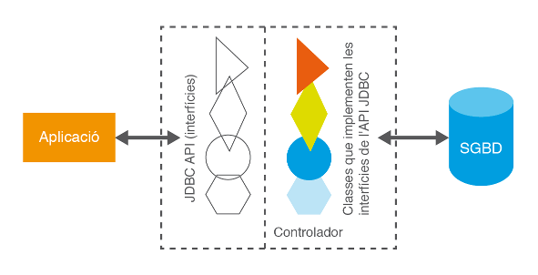
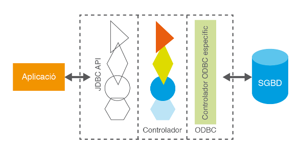
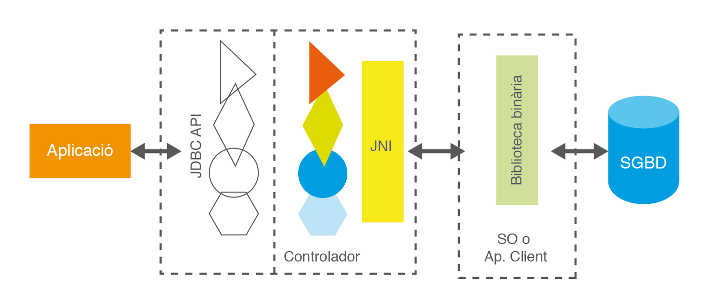
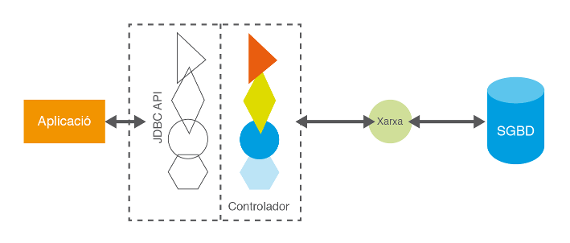

3.2 - JDBC
Pràcticament de forma simultània a ODBC, l’empresa Sun Microsystems, l’any 1997 va treure a la llum JDBC (Java DataBase Connectivity), un API connector de bases de dades, implementat específicament per a utilitzar amb el llenguatge Java. Es tracta d’un API molt similar a ODBC quant a la manera de funcionar:
- Tindrem l'API JDBC que utilitzaran les aplicacions que vulguen connectar a les Bases de Dades, i que garatitza una uniformitat, siga quina siga la o les Bases de Dades a connectar
- Ens farà falta un controlador o driver per cada Base de Dades a la qual vulguem connectar
Però com comentàvem, està adaptat específicament per a Java. És a dir, la funcionalitat es troba encapsulada en classes (ja que Java és un llenguatge totalment orientat a objectes) i a més, no depèn de cap plataforma especifica, d’acord amb la característica multiplataforma defensada per Java.
Aquest connector serà l’API que estudiarem en detall en aquesta unitat, ja que Java no disposa de cap biblioteca específica ODBC. Les raons esgrimides per Sun són que ODBC no es pot fer servir directament en Java ja que està implementat en C i no és orientat a objectes.
Però, per a no perdre la potencialitat de les connexions ODBC, que recordem que ens permetia connectar a qualsevol Base de Dades Relacional, Sun Microsystem ha optat per incorporar de sèrie un driver especial que actua d’adaptador entre l’especificació JDBC i l’especificació ODBC. Aquest controlador s’acostuma a anomenar també pont JDBC-ODBC (bridge en anglès). Utilitzant aquest driver podrem enllaçar qualsevol aplicació Java amb qualsevol connexió ODBC.
Actualment, la gran majoria d’SGBD disposen de drivers JDBC, però en cas d’haver de treballar amb un sistema que no en tinga, si disposa de controlador ODBC, podrem fer servir el pont JDBC-ODBC per aconseguir la connexió des de Java.
Arquitectura JDBC
- La biblioteca estàndard JDBC conté un gran nombre d’interfícies sense les classes que les implementen.
- Els controladors o drivers dels SGBD concrets (i que els proporciona el fabricant del SGBD) són els que han d'implementar les interfícies anteriors i així accedir a les seues dades amb les particularitats que puga tenir el SGBD en concret.
Des de les aplicacions s'utilitzaran les interfícies de JDBC, i d’aquesta manera, el controlador utilitzat serà totalment transparent a l’aplicació.
D’aquesta manera s’aconsegueix independitzar l’aplicació dels controladors permetent la substitució del controlador original per qualsevol altre compatible JDBC sense pràcticament necessitat d’haver de modificar el codi de l’aplicació.

D'una banda trobem les interfícies definides a l'estàndard (les figures amb fons transparent). Es tracta de l'API amb el que l'aplicació treballarà de forma directa.
De l'altra banda trobem les classes específiques del controlador (driver) que interaccionen amb el SGBD i que implementen les interfícies de l'estàndard JDBC. Són les figures amb fons de diferents colors
És important destacar que JDBC no exigeix cap instal·lació, ni cap canvi substancial en el codi a l’hora de fer servir un o altre controlador. I fins i tot podrem utilitzar més d'un controlador per a poder connectar des de la mateixa aplicació a més d'un SGBD. Això és possible perquè:
- Java permet carregar en memòria qualsevol classe a partir del seu nom, i així carregar el o els controladors que necessitem. Es fa amb la sentència Class.forName (“nom_de_la_Classe”).
- La classe DriverManager (de l’API JDBC) és capaç de seleccionar el driver adequat d'entre tots els que estiguen carregats en memòria, sense necessitat d’indicar-li el driver específic que cal fer servir.
Tipus de controladors
JDBC distingeix quatre tipus de controladors:
1. Tipus I. Controladors pont (bridge driver) com JDBC-ODBC. Es caracteritzen per fer servir una tecnologia externa a JDBC i actuar d’adaptador entre les especificacions de l’API JDBC i la tecnologia concreta utilitzada. El més conegut és el controlador pont JDBC-ODBC, però n’hi ha d’altres, com JDBC-OLE DB. La seua principal raó de ser és la de permetre utilitzar l'altra tecnologia (ODBC) que està molt estesa i assegurar així la connexió amb pràcticament qualsevol font de dades. Cada client:
- Haurà de tenir instal·lada una utilitat de gestió i configuració de fonts de dades ODBC (o de la tecnologia utilitzada)
- Haurà de tenir instal·lat el driver ODBC específic del’SGBD al qual es vol accedir
- A través de la primera utilitat crear un DSN (Data Source Name) que utilitze el driver del SGBD amb les dades de connexió al SGBD
Com que la connexió és a través de ODBC (no directament) pot donar problemes de rendiment i, per tant, s’aconsella fer servir aquest tipus de controlador només com a última alternativa.

2. Tipus II. Controladors de Java amb API parcialment nadiu (Native-API partly Java driver). S’anomenen també simplement nadius. Com el seu nom indica, estan formats d’una part codificada en Java i una altra part que usa biblioteques binàries instal·lades en el sistema operatiu. Aquest tipus de controladors existeixen perquè alguns Sistemes Gestors de Bases de Dades tenen entre les seues utilitats de sèrie connectors propis. Solen ser connectors propietaris que no segueixen cap estàndard, ja que acostumen a ser anteriors a ODBC o JDBC, però es mantenen perquè solen estar molt optimitzats i són molt eficients. Utilitzant una tecnologia Java anomenada JNI és possible implementar classes, els mètodes de les quals invoquen funcions de biblioteques binàries instal·lades en el sistema operatiu. Els controladors de tipus II utilitzen aquesta tecnologia per crear les classes implementadores de l’API JDBC. En alguns casos pot requerir una instal·lació extra de certes utilitats a la part client, exigides pel connector nadiu del sistema gestor.

3. Tipus III. Controladors de Java via protocol de xarxa. Es tracta d’un controlador escrit totalment en Java que tradueix les cridades JDBC a un protocol de xarxa contra un servidor intermedi (anomenat normalment Middleware) que pot estar connectat a diversos SGBD. Aquest tipus de driver presenta l’avantatge que utilitza un protocol independent dels SGBD i, per tant, el canvi de font de dades es pot fer de manera totalment transparent als clients. Això el converteix en un sistema molt flexible, encara que per contra, es necessitarà instal·lar, en algun lloc accessible de la xarxa, un servidor intermedi connectat a tots els SGBD que calga. Aquest tipus de controladors són molt útils quan hi ha un número molt gran de clients, ja que els canvis d’SGBD no requeriran cap canvi en els clients, ni tan sols la incorporació d’una nova biblioteca.

4. Tipus IV. Controladors de tipus Java pur o Java 100%. S’anomenen també controladors de protocol nadiu. Són controladors escrits totalment en Java. Les peticions al Sistema Gestor de Bases de Dades es fan sempre a través del protocol de xarxa que utilitza el propi SGBD i, per tant, no es necessita ni codi nadiu en el client (com en el cas del tipus II) ni servidor intermedi (com en el cas del tipus III) per connectar amb la font de dades. Es tracta, doncs, d’un driver que no requereix cap tipus d’instal·lació ni requeriment, la qual cosa el fa ser una alternativa molt ben considerada que en els últims temps ha acabat imposant-se. De fet, la major part de fabricants ha acabat creant un controlador de tipus IV, tot i que segueixen mantenint també els dels altres tipus.

Els tipus desitjables són el tipus III i sobretot el tipus IV, ja que d'aquesta manera no ens fa falta instal·lar res per a poder connectar.
En aquest tema intentarem connectar a 4 Sistemes Gestors de Bases de Dades diferents: PostgreSQL, Oracle, MySQL i SQLite
Els drivers o controladors (tots de tiups IV) us els podeu baixar sense problemes. Són fàcils de trobar, únicament amb un buscador posar jdbc i el Sistema Gestor de Bases de Dades (per exemple jdbc postgresql). De tota manera, per més comoditat, teniu una carpeta en el curs de Moodle amb tots els drivers que ens fan falta.
Llicenciat sota la Llicència Creative Commons Reconeixement CompartirIgual 2.5